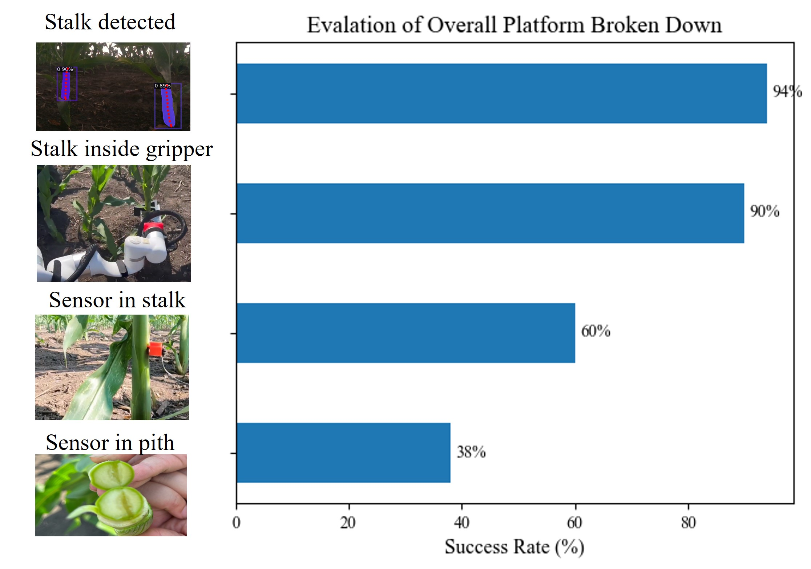
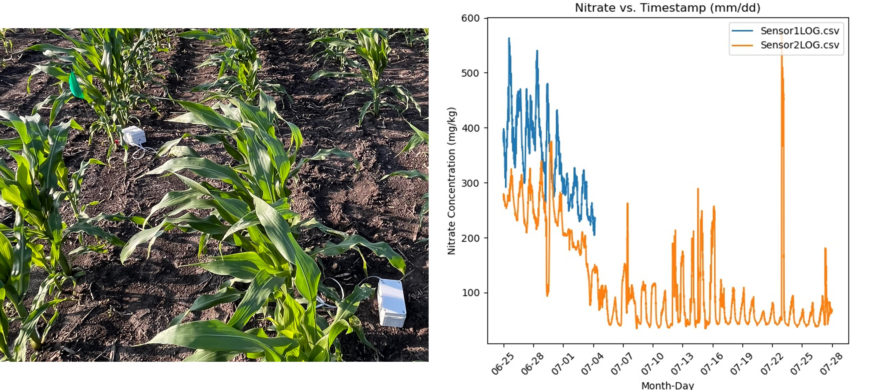
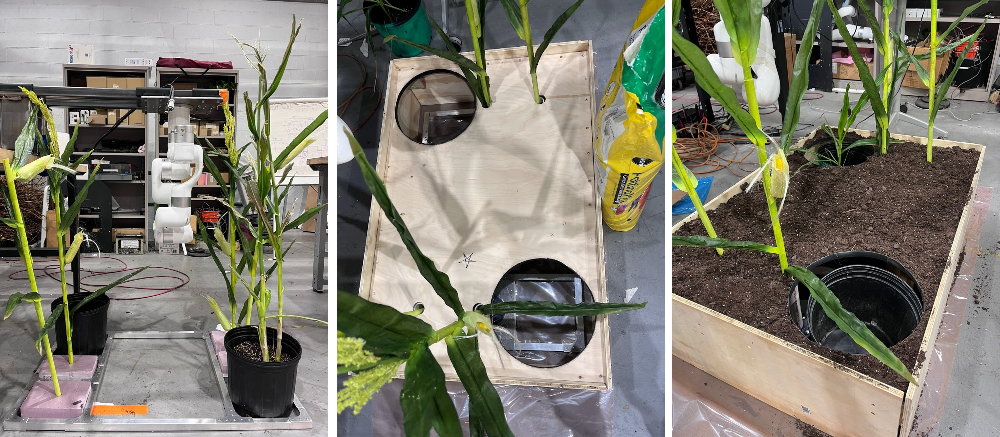
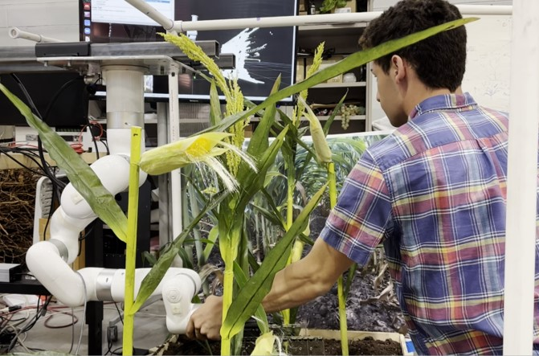
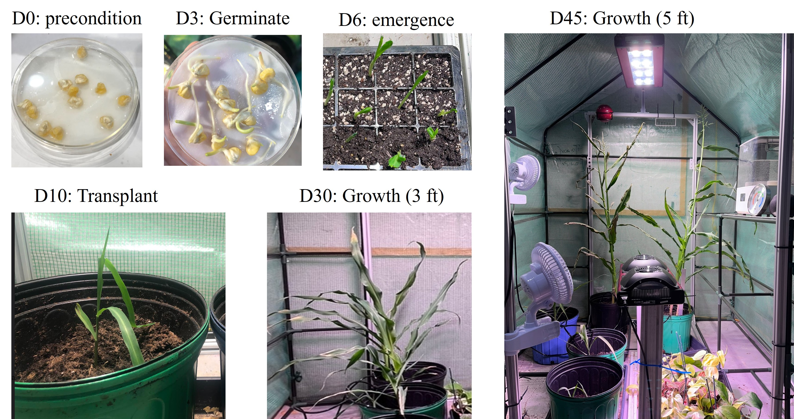

Evaluation Overview
Our goal was to deploy a robust platform that could precisely insert microsensors into corn stalks on an actual farm.
The robot was deployed in Curtiss Farm in Ames, Iowa in July where our collaborators at Iowa State University have prepared
various sections of their corn fields with different types of corn stalks.
We evaluate the perception pipeline as a subsystem first. And then we evaluate the overall autonomous insertion pipeline as a whole.
Finally, we discuss further insights obtained from the field and future work to address these challenges.
Field Evaluation
Over the span of two days, we evaluated our autonomous insertion pipeline on 48 unique corn stalks to test robustness to outdoor conditions and varying corn stalks.
Each trial took about 3 minutes for the robot to perform and 1 minute for human evaluators to examine the insertion quality.
To examine the insertion quality, we recorded the height of the sensor insertion from the ground, visually inspected whether the sensor was inserted deep enough to cover the entire sensor depth,
and cut open the stalk after insertion to verify the sensor was actually in the pith.
The overall field evaluation we broke down into four items. Out of 48 total trials, the detection pipeline returned a valid stalk 45 times,
the gripper could reach the targetted stalk 43 times, the sensor was inserted into the stalk 29 times, and the sensor was inserted in the pith 18 times.

Stalk Detection Evaluation
We determine the accuracy of our 2D model via standard AP and AR metrics. Our current segmentation model performance is shown below.
| Type |
AP |
AP50 |
AP75 |
APs |
APm |
APl |
| Bounding Box |
45.07 |
72.42 |
47.77 |
18.17 |
31.32 |
59.40 |
| Segmentation |
47.71 |
79.82 |
51.05 |
4.33 |
26.18 |
56.68 |
We measure our 3D performance by comparing the predicted grasping point to the ground truth grasping point (we ignore error in height, since height is set as a hyper-parameter and affects the final insertion outcome less). Over 100 ROS service calls, we observe the following results:
Sensor and Datalogging Evaluation
It is important to validate that the data logging unit has the capacity to operate out in the field for numerous days.
To evaluate whether our data logging unit can log nitrate data without external solar power and just from the self-contained battery,
we left the boxes that were deployed for in June and recollected them a month later in July as shown in the image below.
Although one of the logging units turned off, the other remained active throughout this period.
One interesting observation speaking with the agrinomist at Iowa State Univeristy is that our sensor readings shows diurnal responses of the corn stalk.
As expected of plant behavior, nitrogen concentration in stalks differ in day and night, and we can observe this pattern throughout the one month trial of logging.

Mock Setup
One of the challenges of working in agriculture robotics is that we are limited in numbers of times we can experiment in the field as the corn stalks grow once a year.
Therefore, it was imperative that we create mock environment setups that can guide our design iterations and confirm/reject our assumptions.

In order to parallelize development with the mobile platform, we create a mock benchtop setup with just the robot arm in a similar configuration as it would be on the robot.
This mock setup contains synthetic corn and some real corn plants that we grew in our indoor greenhouse (discussed below).
The mock setup was mainly used to (1) guide the development of the arm motion sequence with the insertion mechanism and (2) test the robustness of the detection algorithm.
To provide as much clutter information for the camera, we generated AI image of young corn stalks similar to what we'd expect in Iowa, and used that as a background poster of the mock setup.

Indoor Greenhouse for Plant Samples
To determine how thick and tough corn stalks are for the gripper design, it was imperative to get real corn samples.
However, as no near farms plant corn before May, we had to grow corn ourselves so we could correctly specify the actuator force and gripper design based on empirical data.
To grow our own corn indoors off season, we created an indoor greenhouse that automatically provided LED light and water from a tub.
With few trial and error, we improvised the greenhouse so that we could sustain the lighting, watering, temperature, airflow, and humidity condition to grow corn off season.
Detailed corn growth procedure can be found in this manual done in collabortaion with Virgina Tech.

Discussion and Future Works
To be updated in the paper.